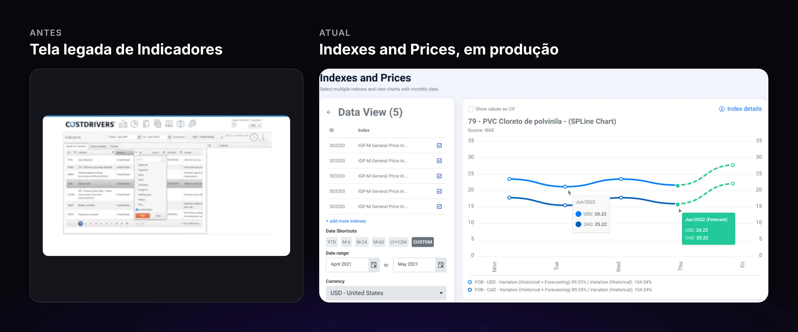
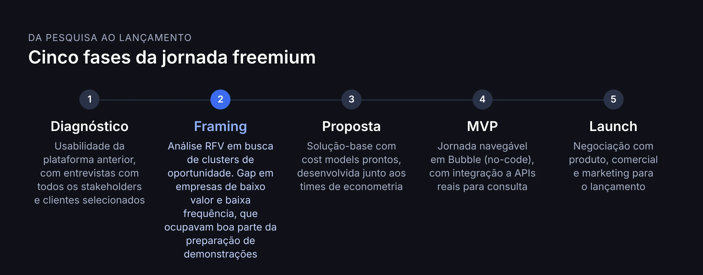
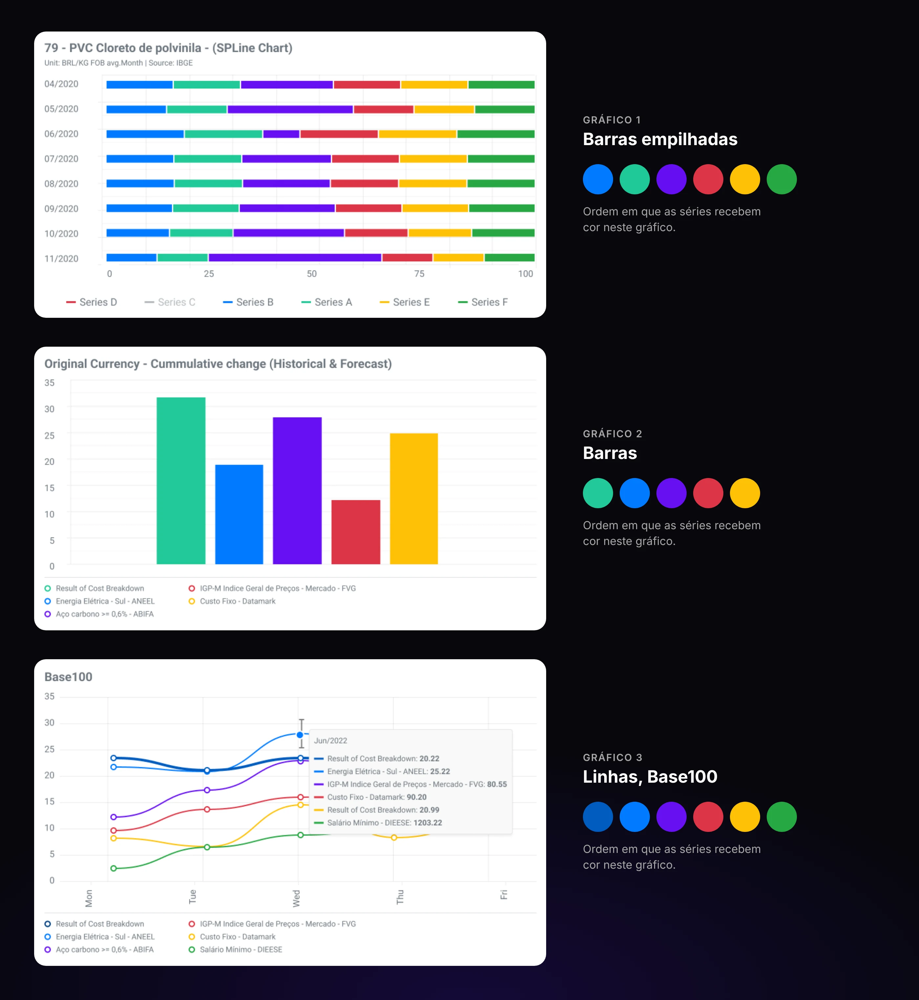
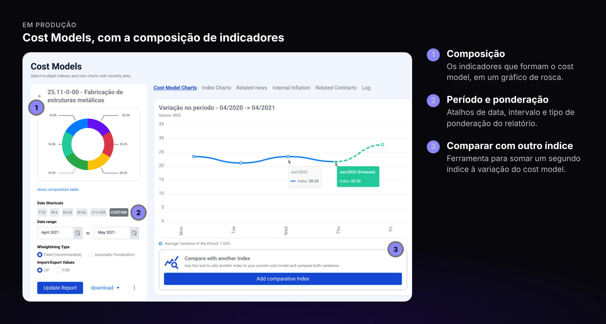
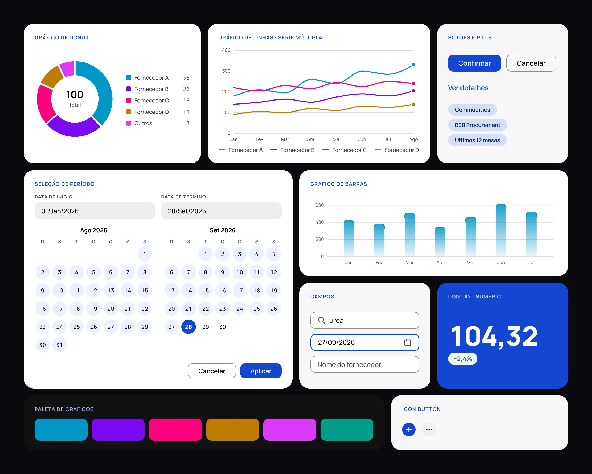
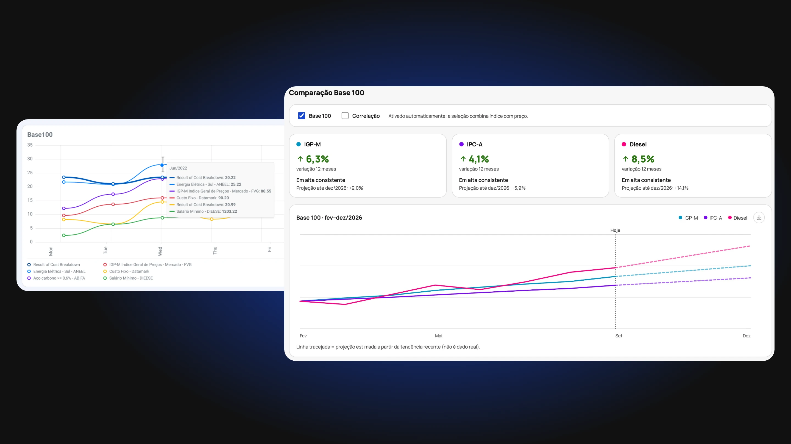
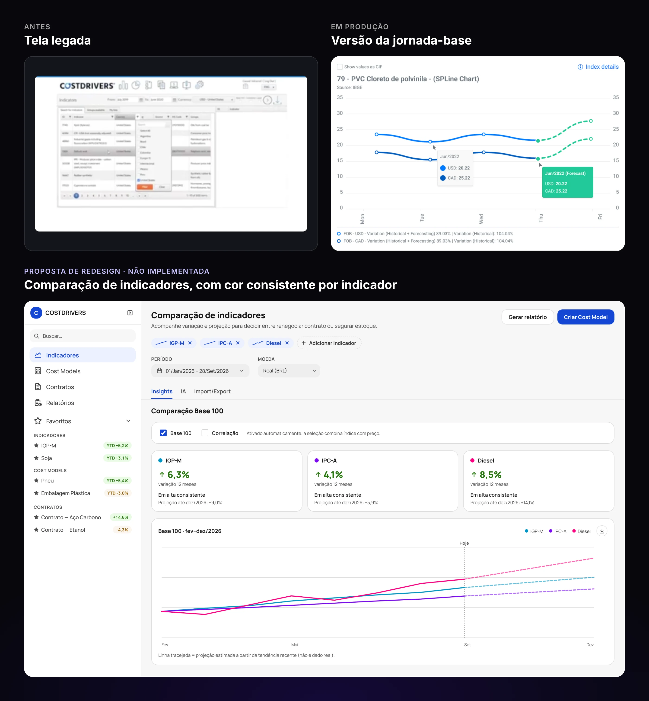

Contexto
COSTDRIVERS concentra os principais indicadores de commodities (milho, soja, etanol) e indicadores macroeconômicos (IGP-M, IPC-A, entre outros), com cálculo integrado de preços FOB/CIF para operações de comércio exterior. Grandes corporações como Cargill, Ambev e Nestlé usam a plataforma como base para negociar e renegociar contratos de compra e para definir orçamento.
A ferramenta carregava 20 anos de histórico técnico — a tela de busca de indicadores ainda rodava com a densidade e a resolução de um sistema legado, pensado para um público extremamente específico: compradores corporativos que já sabem exatamente o que procuram.

Meu papel
Atuei como Senior Product Designer na COSTDRIVERS, cliente atendido via Rizoma Labs, entre agosto de 2020 e março de 2024. Fui responsável pelo UI Kit para implementação em JS/Angular e pela modelagem de visualização de dados da plataforma, incluindo o fluxo de onboarding self-service e o Cost Models, o módulo que permite compor múltiplos indicadores em um único modelo de custo.
Revisitando esse trabalho agora para o portfólio, pesquisei benchmarks de produtos de dado denso (Bloomberg Terminal, Koyfin, Argus, IBM Carbon) e venho construindo um redesign de densidade para as telas de Indicadores e Cost Models, com Design System próprio e telas em alta fidelidade. Essa versão nunca chegou a rodar em produção, por dificuldades técnicas da stack da plataforma na época — o que existe hoje é o material do case.

Problema
Toda conta nova em COSTDRIVERS entrava pelo time comercial: um vendedor apresentava a ferramenta, negociava e só depois o comprador via a plataforma por dentro. Isso encarecia cada aquisição e limitava o crescimento a quanto o time comercial conseguia atender.
Ao mesmo tempo, dentro da ferramenta, um comprador que já era cliente enfrentava telas com 20 anos de densidade acumulada: valores de índice só apareciam ao passar o mouse sobre o gráfico, e a composição de um Cost Model usava paletas diferentes em cada visualização — donut, barras e índice Base100 — para representar o mesmo conjunto de dados.

Benchmarks
Para especificar o redesign de densidade, pesquisei como produtos de dado denso equivalentes resolvem o mesmo problema. Argus Direct Workspaces e Koyfin tratam cada indicador como um widget componível, não uma tela fixa — o oposto da lista estática de índices truncados que COSTDRIVERS mostrava. A IBM Carbon documenta cor consistente por série de dado como regra, exatamente o que faltava entre os três gráficos do Cost Models.
O Bloomberg Terminal trouxe a tensão mais importante para o redesign: a própria Bloomberg documenta que muda sua interface de forma sempre incremental, nunca abrupta, para não quebrar o hábito de um usuário que opera a ferramenta há anos. Um comprador que usa COSTDRIVERS desde antes da minha entrada não podia perder velocidade de leitura por causa de uma reforma visual.
Decisões de design
Substituí o onboarding guiado por um fluxo freemium, autosservido
Antes, todo comprador entrava em COSTDRIVERS por um vendedor, que fazia a prospecção, agendava a demonstração e conduzia o cliente até o contrato. A parte mais pesada ficava nos bastidores: um analista de econometria preparava os cost-models um a um no ambiente de testes, e o cliente navegava livremente por ele por um período que ia de 15 dias a 12 meses. Depois do fechamento ainda vinham a criação do ambiente de produção, o treinamento e o compartilhamento de acessos. Descartei manter esse modelo integralmente porque o próprio produto, uma vez dentro da interface, já era capaz de demonstrar seu valor sem alguém guiando cada clique.
Criei um fluxo freemium em que a prospecção acontece por canais digitais, como LinkedIn Ads e envio em massa, e o comprador se cadastra sozinho na plataforma. A conta já nasce carregada com cost-models padrão, separados por indústria, e ele explora a ferramenta por 15 dias, com acesso a dados sem projeção futura. Só depois disso o time comercial entra, para fechar o contrato. O que antes dependia da preparação manual do analista passou a vir pronto.
![Duas linhas do tempo. Venda assistida, onboarding guiado, em cinco etapas: prospecção, agendamento de demonstração, preparação de ambiente com analista de econometria preparando os cost-models um a um, demonstração conjunta e navegação livre de 15 dias a 12 meses. Venda autosservida, onboarding freemium, em quatro etapas: prospecção digital, cadastro na plataforma, cost-models padrão separados por indústria e demonstração de 15 dias com dados sem projeção futura. As duas terminam no mesmo passo, fechamento de vendas, com redução de 75% no custo de aquisição.](../assets/img/costdrivers/costdrivers-onboarding-linha.webp)
Modelei a composição de indicadores em um único gráfico, em vez de telas isoladas por índice
Um comprador negocia o preço de um insumo como o pneu com base em vários indicadores ao mesmo tempo — petróleo, energia elétrica, transporte, mão de obra —, mas a ferramenta mostrava cada um em uma tela separada. Descartei manter os indicadores isolados porque isso deixava a conta de composição de custo real inteiramente na cabeça do comprador, fora da ferramenta.
Criei o Cost Models: o comprador define os indicadores e os pesos de cada um, e a plataforma acompanha a variação da composição inteira em um gráfico único, já ligado ao cálculo de reajuste dos Contratos.

Construí um redesign de densidade orientado por benchmarks, com Design System próprio — nunca chegou à produção
Com a pesquisa de Argus, Koyfin, Carbon e Bloomberg, defini três mudanças para a densidade das telas atuais: tratar cada indicador como um widget configurável em vez de lista fixa, aplicar uma cor consistente por indicador entre os três gráficos do Cost Model, e dar à variação acumulada e à projeção de reajuste dos Contratos um destaque de alerta, hoje enterrados em texto pequeno.
Descartei entregar isso como mudança abrupta de interface, seguindo o princípio da própria Bloomberg de evolução incremental. Para sustentar essas decisões, criei um Design System dedicado — escala de preto com um único acento azul, paleta de gráfico validada para daltonismo, tipografia Manrope — e comecei a construir as telas em alta fidelidade. Essa versão nunca chegou a rodar em produção: esbarrou em dificuldades técnicas na stack existente da plataforma antes da minha saída.


Resultado
O fluxo self-service derrubou o custo de aquisição por cliente de R$1.000 para R$250. A taxa de renovação de contratos subiu 15%, e o NPS foi de 65 para 89 pontos — resultados da jornada-base, que inclui o onboarding self-service e o Cost Models, de fato implementada em produção.
O redesign de densidade orientado pelos benchmarks — hoje com Design System e telas em alta fidelidade construídos para este case — nunca chegou a rodar em produção, então não tem resultado de uso associado. Fica registrado aqui como a direção que eu proporia para essas telas, com a pesquisa e o sistema que a sustentam.

Aprendizados
A lição mais clara é sobre a diferença entre desenhar a decisão certa e conseguir implementá-la: o redesign de densidade tinha pesquisa sólida por trás, mas esbarrou em uma stack que não foi pensada para comportar aquela mudança — da próxima vez, validaria a viabilidade técnica junto com engenharia antes de aprofundar a especificação.
Fica claro também que nem todo ganho de produto vem de UI nova: o maior salto de CAC e retenção em COSTDRIVERS veio de tirar uma barreira comercial do caminho, não de redesenhar uma tela.